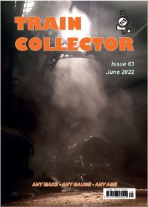

Latest edition now available online and in print to subscribers
Welcome to the December edition of the Train Collector, as always full of toy train delights to read over the cold and rainy days.
Almost exactly a century ago the armistice was signed that ended hostilities in the Great War. To mark this event much of the content of this issue focuses on toy/model railways in military guise. An interesting observation from putting this issue together is just how little was made that represented the 1914-18 conflict.
Subscribe today to continue reading, or sign in to eLibrary.
